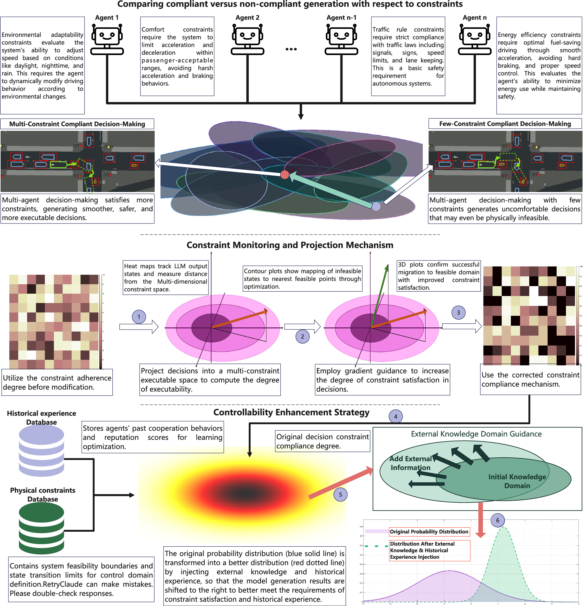
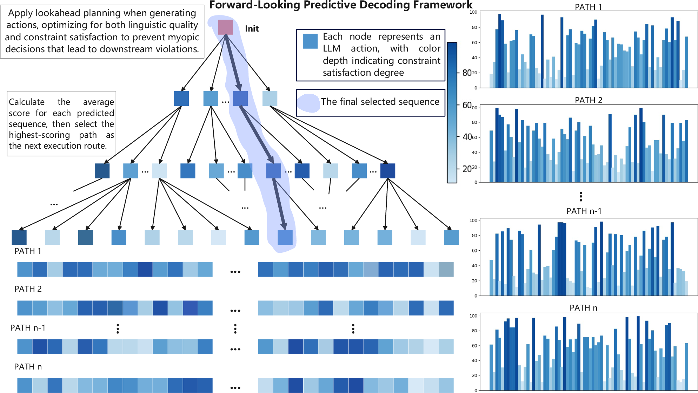
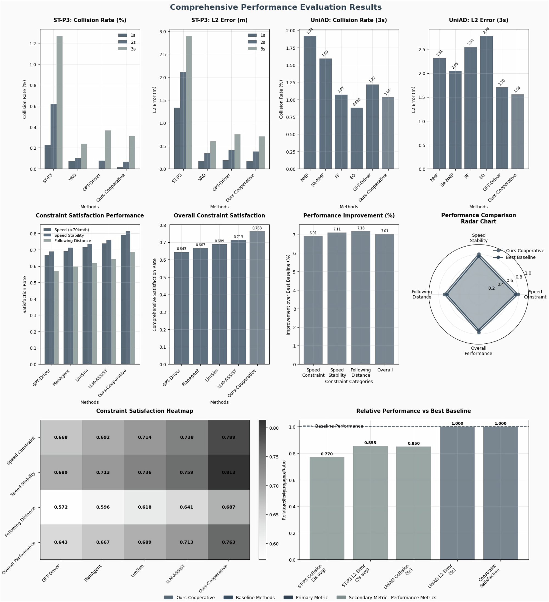
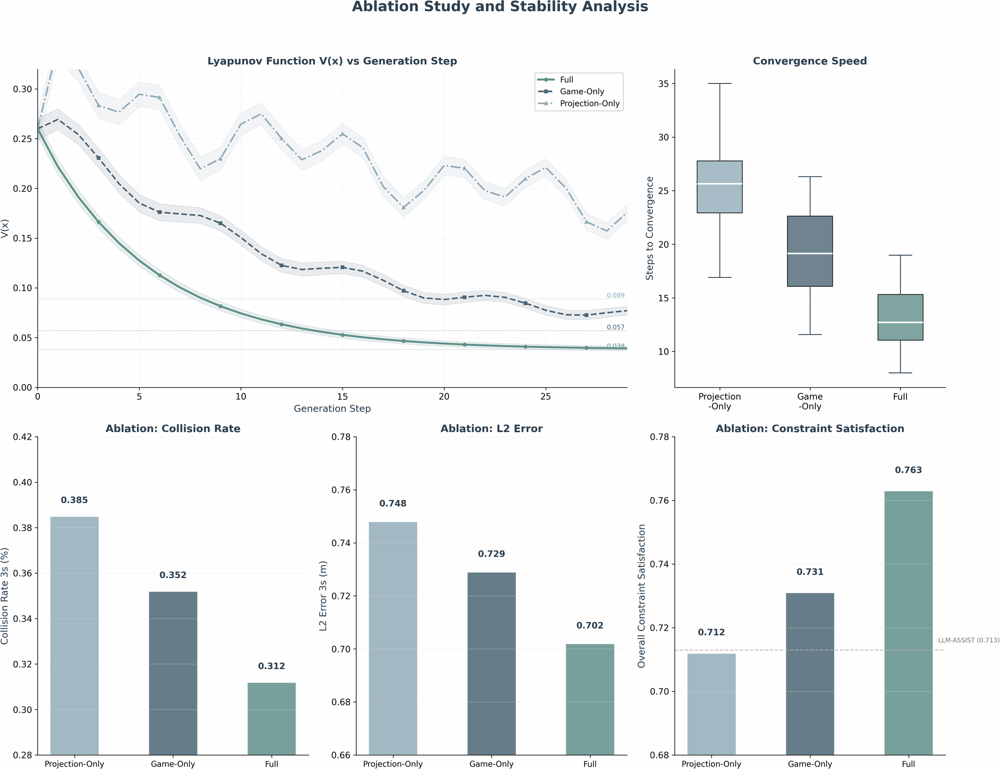
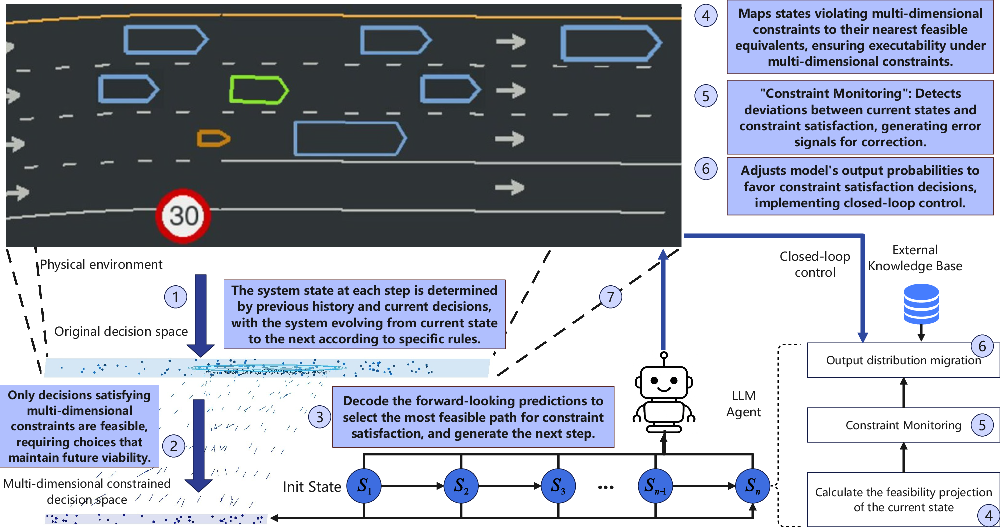
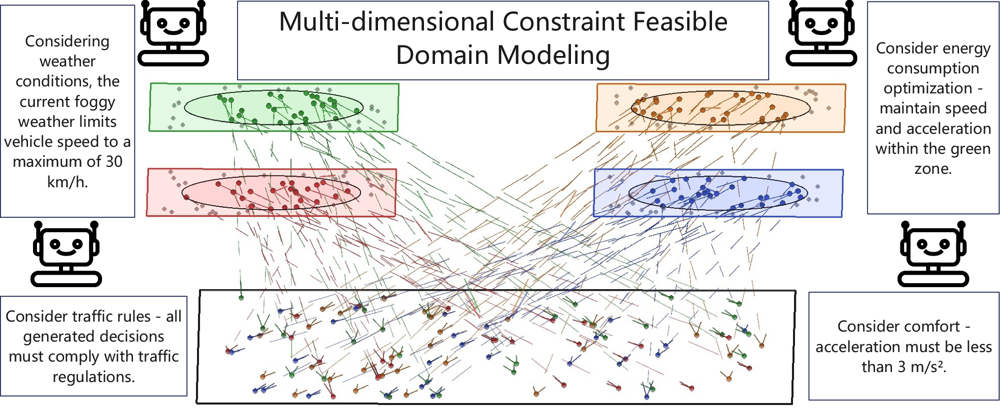

全文精读
Lyapunov引导的合作博弈实现大语言模型多智能体系统的稳定约束融合
Lyapunov-guided cooperative games enable stable constraint fusion in LLM-based multi-agent autonomous systems
解读更新 2026-11-15 23:13 · 依据论文全文整理
全文精读已完成，文章版正在逐步升级。现有内容可继续阅读。
本文针对多智能体调整自身约束时引发他者偏差、导致协作振荡的问题，将约束融合转化为动态收敛设计。框架结合Lyapunov度量、合作优化、预测解码与概率纠偏，在nuScenes上使用Llama3:8B验证，总体约束满足率由0.713升至0.763。解读：其价值在于控制理论与生成过程的接口设计，而非已证明的稳定性；多处图文错配和统计呈现问题要求谨慎采信。
研究问题
作者关注约束随交互动态传播的问题：规划调整会改变安全和舒适评价，局部修正又可能触发新的违反。原文称系统可能“oscillate among multiple local solutions”。研究目标因此不是单轮规则检查，而是在维持生成质量的同时引导联合状态趋向可行域。
方法与路线
框架先用Lyapunov函数整合个体偏差、智能体冲突和Pareto偏差，再以有限时域合作优化选择控制。指数惩罚重加权token概率，随后按约束维度纠正残余偏差；声誉、奖励和责任分配反馈更新权重，形成逐token闭环。
创新与比较
作者的方法贡献是把静态约束评估改写为动态收敛设计，并将连续控制输入映射为离散生成概率干预。解读：值得关注的是统一状态度量与可执行解码接口的组合，而非新稳定性定理；正文明确只搜索近似Pareto改进方向，不能等同于求得完整最优解集。
证据与发现
表2显示总体约束满足率从LLM-ASSIST的0.713升至0.763，约为7.0%的相对提升。表3中完整框架的3秒碰撞率为0.312%、L2误差为0.702米，均优于两个消融版本。解读：这些结果支持模块组合的经验价值，但表1不支持所有时域、所有基线均占优。
局限与边界
无正式稳定性证明，仅验证四智能体驾驶场景。原件缺项包括：P4降幅不符；P5比例解释与时域图示不足；P7图注错配、稳态对应不明；P8–P10图号图注错配及颜色定义冲突；P12数据定位、P13文献定位不全。影响量化核验与复现；补充材料未提供，不得视为已验证。 原文核对： 表1与正文的 ST-P3 平均L2误差降幅不一致。按表中三时域数值，GPT-Driver 均值为(0.1837+0.407+0.7549)/3，本方法为(0.1612+0.3796+0.7016)/3，相对下降约7.67%，并非正文的7.1%。原页两处均清晰；影响降幅的准确数值，不改变本方法平均误差较低的方向。； 图2右下比例图标注0.770、0.855、0.850、1.000、1.000，图注却称数值≥1表示本方法达到或超过最佳基线。前两项分别对应表1中本方法/VAD的3 s碰撞率及L2误差，属于越小越好的指标；最后的总体约束满足率比例1.000也不能表示0.763相对LLM-ASSIST的0.713。缺少一致的基线和指标方向说明，不能按图注统一解释优势。； 图2图注称顶行比较两平台1 s、2 s、3 s结果，但原图 UniAD 两面板标题明确为“Collision Rate (3s)”和“L2 Error (3s)”，仅展示3 s。缺少图注所称的 UniAD 1 s、2 s图示，相关数值须以表1为准。； 图3图注与实际附图不匹配。实际图题为“Ablation Study and Stability Analysis”，内容为V(x)曲线、收敛步数箱线图及消融柱状图；图注却描述自动驾驶约束交互、编号(1)至(6)机制和S1至Sn状态演化。缺少与实际稳定性图相配的图注，阴影带及箱线图统计含义未获该图注解释。； 图3左上V(x)曲线与P4报告的稳态值不完全一致：Full曲线接近0.038，但Game-only与Projection-only末端未落在图中标注0.057、0.089的对应水平参考线上，尤其Projection-only仍明显高于0.089。缺少曲线与所报稳态值关系的解释；可观察到Full较低、较平滑，但不能据该图确认全部稳态数值。； 图4图注与原图内容不匹配。原图为道路场景、S1至Sn状态演化、LLM智能体及监测—投影—输出迁移闭环；图注却描述四个智能体的天气、交通、舒适、能耗约束及彩色椭球交集，这些内容实际见本批P9图6。图4缺少与实际图面对应的正确图注，影响模块及图号对应关系，但不妨碍读取图中文字。； 公式(8)后正文将逐token记录的V(x)轨迹指向图6；经核对P9原图，图6实际为多维约束可行域示意，没有V(x)轨迹。该交叉引用不能提供正文所称的稳定性实验图证，不能据图6核实下降趋势。； 图5颜色含义不一致：图内图例写“color depth indicating constraint satisfaction degree”，图注却写“color depth indicating confidence levels”。缺少两者是否等同的说明，无法唯一确定节点颜色编码的是约束满足度还是置信度。； 图6图注声称展示Full、Game-only、Projection-only的V(x)生成步轨迹，实际附图标题为“Multi-dimensional Constraint Feasible Domain Modeling”，展示四类约束及向量场，没有三种消融轨迹或生成步坐标。缺少与实际图面对应的正确图注，不能用此图支持近单调下降或振荡结论。； 预测解码段落以“as in Fig. 6”指引生成协调机制，但本批图6实际为多维约束可行域示意；与该段描述直接对应的前瞻预测解码树位于图5。图号引用不匹配，影响方法图文定位，不代表解码公式缺失。； Data availability原页将nuScenes dataset与GPT-Driver dataset均链接到https://www.nuscenes.org/，未提供可区分的GPT-Driver数据文件、版本或专用入口。缺少精确数据定位，影响复现实验所需数据的可追溯性；仅据本页不能判定数据实际不可获得。； 参考文献42的PlanAgent条目在原页仅给出https://doi.org/10.1109/TCDS，缺少完整文章级DOI后缀，也未列卷页或文章号。该条目的精确定位信息不完整，影响基线文献追溯，不直接改变本文实验数值或结论；未访问链接核验。
方向关联
解读：对智能运维，可借鉴多个诊断与调度智能体之间的约束传播监测；对结构设计，可类比性能、成本和可制造性的协调；对可靠性研究，可关注偏差累积与纠偏闭环。但这些均是迁移联系，论文没有相应领域实验，也未证明概率干预能够保障工程安全。
后续研究建议
建议先取得补充说明，核对偏差函数、动态惩罚、Shapley责任分配和声誉更新的实现，再复算表1降幅并校正图文对应。随后分别消融预测、投影和激励模块，记录逐token偏差及推理开销；跨领域应用前，应检验约束冲突与不可行状态下的行为。
阅读建议
建议作为多智能体约束协调的方法启发重点阅读，优先核对概率干预和消融表；不宜直接作为严格稳定性或工程安全保证的依据。
原图未改动。以下图注来自标注的来源，不据此补写摘要未报告的实验结论。
已取得的论文原图


原文图注与出处
This framework addresses multi-agent constraint fusion for autonomous driving systems. The top panel compares multi-constraint compliant decision-making (left), which generates smoother, safer, and more executable decisions, with few-constraint compliant decision-making (right), which produces uncomfortable and potentially infeasible decisions. The central 3D visualization illustrates the constraint monitoring and projection mechanism: (1) heat maps track LLM output states and measure distances from multi-dimensional constraint space, (2) contour plots show mapping optimization from infeasible to nearest feasible points, and (3) 3D plots confirm successful migration to feasible domains through improved constraint satisfaction. The bottom section presents the controllability enhancement strategy, incorporating historical experience databases for agent cooperation behaviors, physical constraint databases for feasibility boundaries, and external knowledge domain guidance that transforms the original probability distribution (blue solid line) into a better constraint-satisfying distribution (red dotted line). The framework ensures system stability through Lyapunov functions and achieves Pareto-optimal strategies via cooperative differential games.
Xu, Zeling et al.
原文图页 · CC BY-NC-ND 4.0

原文图注与出处
This figure illustrates the cooperative differential game-driven collaborative predictive decoding mechanism. The framework employs lookahead planning to optimize linguistic quality and constraint satisfaction while preventing downstream violations. The central tree structure shows the multi-path exploration process, where each node represents an LLM action with color depth indicating confidence levels. Multiple prediction paths (PATH 1, PATH 2,…, PATH n -1, PATH n ) are evaluated in parallel, with the system calculating average scores for each predicted sequence and selecting the highest-scoring path as the next execution direction. The right panel displays probability distributions for different paths, demonstrating how the framework assesses and compares alternative trajectories. Through this three-stage cooperative process of collaborative optimization, information sharing, and stabilization, the system predicts future state evolution within the prediction horizon T pred , solves constraint Pareto-optimal solutions, and ensures both individual role consistency and system-wide coordination through receding horizon control strategies.
Xu, Zeling et al.
原文图页 · CC BY-NC-ND 4.0

原文图注与出处
Top row: Collision rate and L2 error comparisons on the ST-P3 and UniAD platforms across 1 s, 2 s, and 3 s prediction horizons. Middle row (left to right): Per-constraint satisfaction rates across methods; overall constraint satisfaction rates; percentage improvement of the proposed method over the best baseline (LLM-ASSIST) for each constraint category; radar chart comparing Ours-Cooperative against the best baseline across four evaluation dimensions. Bottom row: Constraint satisfaction heatmap showing all methods across all constraint categories, where darker shading indicates higher satisfaction; relative performance ratio of Ours-Cooperative to the best baseline on each metric, where values at or above 1.0 indicate that the proposed method matches or exceeds the best baseline.
Xu, Zeling et al.
原文图页 · CC BY-NC-ND 4.0

原文图注与出处
This figure illustrates the core challenge of multi-agent constraint fusion in collaborative systems. The upper section depicts the autonomous driving scenario where agents must navigate complex constraint interactions: (4) mapping constraint-violating states to nearest feasible equivalents for multi-dimensional constraint satisfaction, (5) constraint monitoring that detects deviations and generates error signals for correction, and (6) closed-loop control adjusting output probabilities to favor constraint-satisfying decisions. The lower section shows the system’s temporal evolution from initial state S 1 through sequential states S 2 , S 3 ,…, S n −1 , S n , where: (1) each system state is determined by previous history and current decisions with evolution governed by specific rules, (2) only multi-dimensionally constraint-satisfying decisions are feasible and maintain future viability, and (3) forward-looking predictions decode the most feasible path for constraint satisfaction. The LLM agent integrates external knowledge bases through constraint monitoring and feasibility projection to achieve stable multi-agent coordination under complex constraint networks.
Xu, Zeling et al.
原文图页 · CC BY-NC-ND 4.0已取得的论文原图


原文图注与出处
This figure illustrates the construction of multi-dimensional constraint feasible regions in cooperative differential game frameworks for autonomous driving systems. Four agents with distinct roles contribute different constraint dimensions: weather-based speed constraints (Agent 1: foggy conditions limiting maximum speed to 30 km/h), traffic regulation compliance (Agent 2: adherence to traffic laws), comfort optimization (Agent 3: acceleration limits below 3 m/s 2 ), and energy efficiency (Agent 4: speed and acceleration within green zones). The central 3D visualization shows the intersection of these constraint domains, where colored ellipsoidal regions represent individual agent constraint spaces and the complex vector field depicts the feasible decision trajectories. The overlapping regions demonstrate how the collaborative feasible domain \({\mathcal{F}}\) emerges from the intersection of all agent constraints, forming the admissible state-control space where cooperative Pareto-optimal solutions exist while satisfying both individual rationality and system-wide coordination requirements.
Xu, Zeling et al.
原文图页 · CC BY-NC-ND 4.0

原文图注与出处
The Full framework exhibits a near-monotonic decrease, Game-only shows an overall decreasing trend with local fluctuations, and Projection-only displays pronounced oscillations.
Xu, Zeling et al.
原文图页 · CC BY-NC-ND 4.0